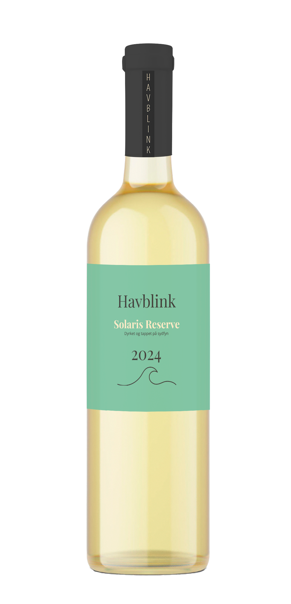

Solaris Reserve 2024
Elegant friskhed med kant
Denne årgang er ren Solaris med et sprødt udtryk og mineralsk
finish.
Duften af grønne æbler og hvide blomster fanger straks
opmærksomheden, mens smagen afsluttes med citrus og en
antydning af salthed fra Sydfyns kyst.
Perfekt til grønne salater, ceviche og lune sommeraftener.
Se den på vores shop »